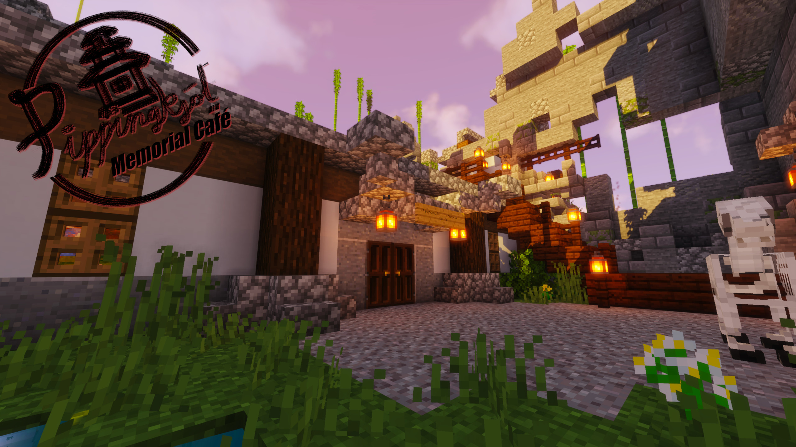

Jos sivulta puuttuu jotain tietoa, niin Discordissa voi tulla laittamaan viestiä: Fabian Adrian#6234
Palvelimella liikkuminen
Meillä on tarjolla "useita" pelimuotoja, joiden välillä voit liikkua seuraavilla komennoilla.
/lobby
Portaali kaikkiin pelimuotoihin
/survival
Klassinen Minecraft-kokemus miedoilla mausteilla
/creative
Luovaa rakentelua omilla ploteilla
Yksityisviestit ja ryhmächat
Yksityisviestejä on mahdollista lähettää pelimuodosta riippumatta. Tämä tarkoittaa siis käytännössä sitä, että jos kaverisi on esimerkiksi creativessa ja itse olet survivalissa, voitte silti keskustella siitä mitä söitte eilen aamupalaksi tai mikä on WAE:n sinisen oikea värikoodi.
Palvelimeltamme löytyy myös ryhmäkeskustelut! Tässä komennot myös siihen:
/gc [viesti]
Vaihda ryhmächat-tilaan/lähetä viesti ryhmään
/group create <nimi> [salasana]
Luo uusi ryhmä
/group join <nimi> [salasana]
Liity ryhmään
/group leave <nimi>
Poistu ryhmästä
/group <nimi>
Valitse ryhmä jossa haluat puhua
/group transfer <pelaaja>
Vaihda ryhmäkeskustelun omistajaa
/group delete <nimi>
Poistaa ryhmän
/group list <nimi>
Listaa ryhmän jäsenet
Muut komennot
/ignore
Piilottaa tietyn pelaajan viestit
Survival
Säännöt
Survivalin puolella meillä on yksinkertaiset pelisäännöt varmistamassa sen, että kaikilla on mukavaa pelatessa. Luethan nämä tarkasti, sillä "Sori en lukenut sääntöjä" ei ikävä kyllä pelasta sinua tyhmiltä teoiltasi. Perusjärjellä pääsee jo pitkälle!
Rakennusten vandalisointi on kielletty. Tämä pätee myös suojaamattomiin rakennuksiin!
Pidäthän rakentaessasi vähintään 200 palikkaa hajurakoa naapureihin, ellei toisin ole sovittu.
Epävirallisten Minecraft-versioiden käyttö on kielletty, OptiFine on kuitenkin sallittu.
Ulkopuolinen avustus, kuten: Macrot, autoclicker yms. on kielletty. Hiiren teippaaminen pohjaan ja muu näsäviisastelu lasketaan tähän mukaan. :D
"Duplicate glitchien" hyödyntäminen ei myöskään ole sallittua toimintaa.
Näin pääset alkuun
Spawnilta löytyy "RandomTP"-kyltit, joita klikkaamalla pystyy teleporttaamaan satunnaiseen paikkaan pelikartan sisällä. Jos et halua asua aivan spawnin lähettyvillä(Mitä emme myöskään suosittele!), tämä on helppo tapa päästä johonkin kauemmas. Huomaathan, että kylttejä voi käyttää vain kerran kahdessa päivässä, sillä ne on tarkoitettu lähinnä uusille pelaajille.
Meillä on myös käytössä /home komento, joka toimii hieman eri tavalla, kuin muualla. Kodin voi asettaa klikkaamalla sänkyä samalla, kun hiivit. Tämä mahdollistaa muissa sängyissä nukkumisen ilman, että koti vaihtaa paikkaa!
Ja viimeiseksi; Spawnille pääsee aina takaisin komennolla /spawn. Kaikissa "teleport"-komennoissa on puolen tunnin "cooldown", eli tätäkin komentoa voi käyttää vain puolen tunnin välein.
Rakennusten suojaus
Voit suojata rakennuksesi muilta pelaajilta tonttien avulla. Oman tontin luonti onnistuu siten, että klikkaat kultalapiolla suojattavan alueen kahta vastakkaista kulmaa. Voit myös halutessasi muuttaa tontin kokoa jälkeenpäin klikkaamalla kultalapiolla yhtä olemassa olevan tontin kulmaa ja sen jälkeen palikkaa johon haluat tämän kyseisen kulman siirtää.
Sinulla on käytössäsi myös tikku, jolla palikkaa klikkaamalla pystyt tarkistamaan oman- tai muiden tonttien rajoja.
Komennot tontin hallintaan
/abandonclaim
Poistaa tontin, jonka sisällä seisot
/abandonallclaims
Poistaa kaikki tontit
/claimexplosions
Sallii/kieltää räjähdykset
/trust
Antaa pelaajalle kaikki oikeudet tonttiin, jonka sisällä seisot
/accesstrust
Antaa pelaajalle oikeuden käyttää nappuloita, vipuja, painelaattoja yms
/containertrust
Antaa pelaajalle oikeuden penkoa arkkuja ja muita säilytyslaatikoita
/untrust
Poistaa pelaajalta oikeudet tontilta, jonka sisällä seisot
/untrustall
Poistaa pelaajalta oikeudet kaikkilta tonteilta
/trustlist
Listaa pelaajat, joilla on tontilla oikeuksia
/subdivideclaims
Vaihtaa lapion "alitontti"-tilaan
/basicclaims
Palauttaa lapion takaisin normaaliin tilaan
/claimslist
Näyttää tietoja tonteista
/trapped
Pelastaa sinut pälkähästä, jos jäät toisen tontille jumiin
/kfc
Potkii toisen pelaajan pois tontilta
Matkamuistoja

Pippingskjöl Memorial Café
Vuonna 1769 (nice) luostaripoika nimeltä Viljo "Larry" Pippingskjöl rakensi itselleen yksinäisyyden esikuvan: japanilaistyylisen linnan.
Viisi päivää myöhemmin kuumat nunnat ja muut kyläläiset seurasivat Viljoa ja halusivat asettautua hänen kulmilleen.
Tästä Viljo ei tykännyt ja räjäytti linnansa yli 9000 auringon voimalla jättäen vain rauniot peräänsä.
Viljon tämänhetkisen olinpaikan tietävät vain harvat.
Creative
Säännöt
Rakennathan järkevästi, ylläpito tulee poistamaan asiattomat plotit.
Komennot:
/p auto
Valtaa sinulle automaattisesti lähimmän vapaan plotin
/p claim
Valtaa sinulle plotin, mikäli kukaan muu ei ole ehtinyt ensin
/p delete
Poistaa sen plotin
/p clear
Tyhjentää plotin
/p home
Teleporttaa sinut omalle plotillesi
/p visit
Vieraile toisen pelaajan plotilla
Plottien yhdistäminen
Mikäli haluat yhdistää plottisi, ota yhteyttä ylläpitoon joko Discordissa #minecraft-kanavalla tai pelissä /helpme komennolla!
{kind=link}